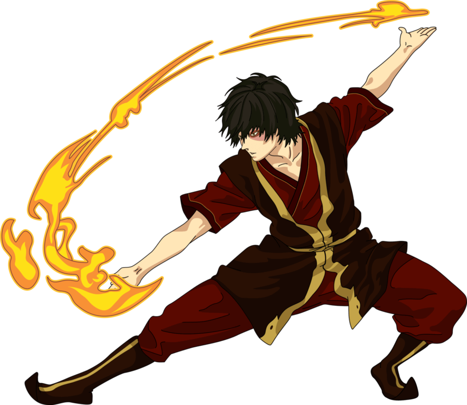
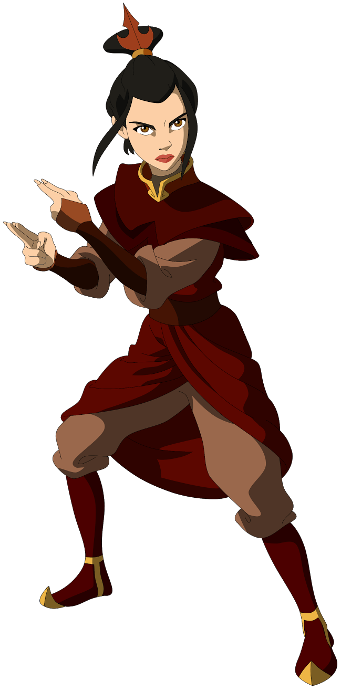
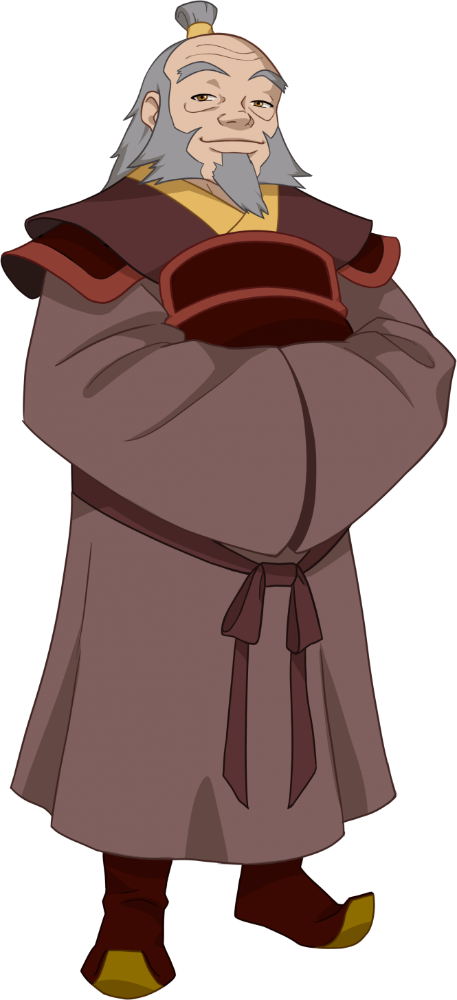
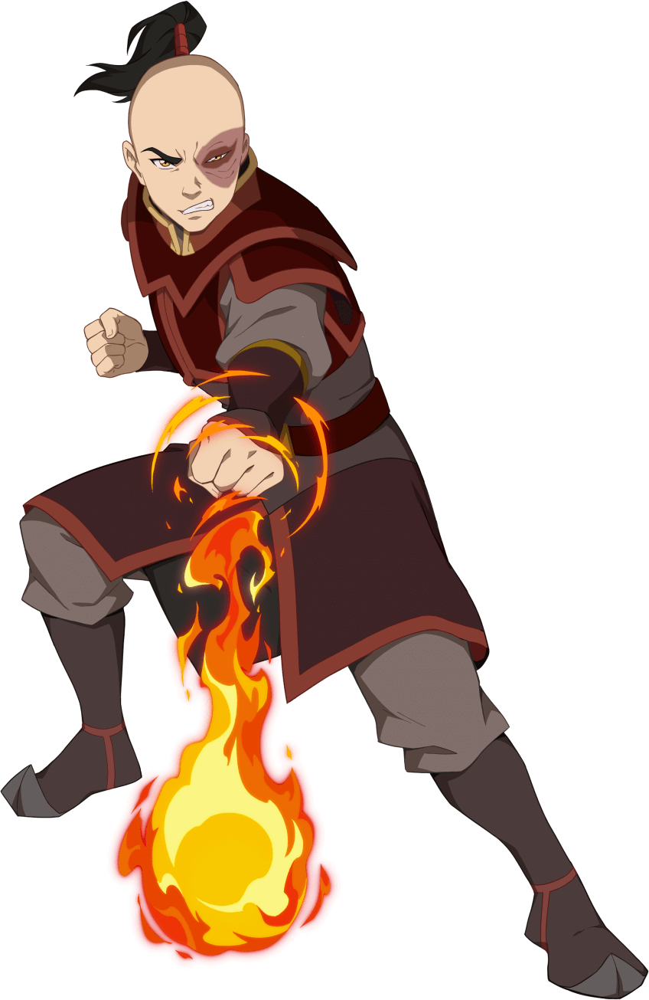

La Nación del Fuego es una de las Cuatro Naciones y una monarquía absoluta dirigida por el Señor del Fuego. Es el hogar de la mayoría de los Maestros Fuego. Su capital se llama la "Capital de la Nación del Fuego" y su gente es conocida como los "Nacionales del Fuego".
Durante un siglo, la Nación del Fuego estuvo involucrada en una guerra con las otras tres naciones, cometiendo genocidio contra los Nómadas Aire, conquistando territorios del Reino Tierra y llevando a cabo incursiones que casi aniquilaron a los Maestros Agua de la Tribu Agua del Sur, excepto uno.
Fuego Control
El fuego es el elemento del poder, representando la fuerza y la voluntad inquebrantable para cumplir tareas y deseos. Durante la Guerra, la Nación del Fuego retorció el control del fuego para alimentarlo con ira, odio y rabia. Los Maestros Fuego se inspiraron en los dragones y el sol para desarrollar sus técnicas de Fuego Control.
El Fuego Control se destaca por su estilo agresivo y la falta de movimientos defensivos. Algunos Maestros Fuego notables utilizan creativas tácticas defensivas, como crear grandes muros de fuego o derribar objetos con ataques precisos.

Personajes Favoritos

Azula
La mejor villana de la serie y un personaje complejo de entender

Tio Iroh
Ama el té y su sueño es tener una casa de Té en Ba Sing Se

Zuko
Fue desterrado y obligado a capturar al Avatar para recuperar su honor.
Porque Iroh es el mejor Personaje?
Es necesario decirlo? Es uno hombre lleno de sabiduria, dispuesto a ayudar a quien lo necesita. Es como un padre para Zuko.
Tiene un pasado oscuro, el cual no se enorgullece y no permite que eso haga que afecte en su crecimiento personal.
La Redencion
Luego de ser capturado por el Señor del Fuego, lo encierra por traicionar a su nacion.
Sin embargo, esto no lo detiene y a escondida de los guardia entrena y se ponene mamadisimo.